Examples Gallery#
For categories, outcomes and a recommended starting point, open Examples by task.
For a compact model–data interaction with actual hydrological solver execution, start with Run MODFLOW with geophysical structure and Ex. Geophysical structure → MODFLOW → hydrological response.
The central theme is the interaction between geophysical data and hydrological models: predicting observations from model states and interpreting data as hydrological information. See Connecting geophysical data and hydrological models.
Open the notebooks in JupyterLab or VS Code and run the cells in order: inspect
the data, edit parameters, run the model, then view the results. Every scientific
example has a companion .ipynb; the .py versions use # %% cells for
editors and website generation.
This gallery contains Python scripts and notebook downloads. It spans hydrological model access, petrophysical conversion, multi-method responses, field inversion, time-lapse monitoring, joint inversion and uncertainty analysis.
Start with Ex. Loading and Processing Hydrological Model Outputs, then Ex. ERT Workflow: From Hydrological Models to ERT responses and Inversion. Use Ex. Hydrology to Multi-Geophysics Responses to see how one hydrological profile connects to several geophysical methods. Review each script’s input paths and dependencies before running it; the site uses pre-generated figures.
Run order, run time and memory#
Most examples read only the shipped files under examples/data. Three read
what another example writes under examples/results and stop with
FileNotFoundError when it is missing:
Ex_SRT_invreadsresults/SRT_forward/synthetic_seismic_data_long.dat. RunEX_SRT_forwardfirst; it takes about a minute.Ex_structure_TLresinvreadsresults/Structure_WC/mesh_with_interface.bms. RunEx_Structure_resinvfirst.Ex_MC_Hydroreads the models thatEx_structure_TLresinvwrites toresults/Structure_WC. RunEx_Structure_resinvand thenEx_structure_TLresinvfirst, which takes about 3 hours.
The heavier examples, as measured on the maintainer’s machine:
Example |
Run time |
Memory peak |
|---|---|---|
|
about 12 min |
about 13.5 GB |
|
about 42 min |
about 15 GB |
|
about 3 h |
|
|
about 44 min |
|
|
about 8 GB |
Survey diagnostics and data assimilation on the MODFLOW model#
These three examples start from the Treeline catchment MODFLOW model under
examples/data and follow the hillslope transect of Ex_ERT_workflow.
They run the package’s own profile interpolation, petrophysics, ERT forward
model and inversion, so they need PyHydroGeophysX with pyGIMLi. Each takes
two to three minutes on the maintainer’s machine, uses fixed random seeds,
writes its arrays and figure under examples/results/ and has a companion
notebook.
Ex_sensitivity_analysis.py: predicts the ERT survey of a MODFLOW state withhydro_to_ert, inverts it, and maps cumulative sensitivity, model resolution and the Oldenburg-Li depth of investigation over the MODFLOW units.Ex_posterior_uncertainty.py: inverts the same survey, reads the inversion as a Gaussian posterior and propagates its covariance into water-content intervals, which it checks against the MODFLOW water content, at two strengths of the prior.Ex_ensemble_assimilation.py: updates an ensemble of MODFLOW states with the day-210 survey indata/TL_measurements, by EnKF and ES-MDA.
To use a ParFlow run instead, read saturation and porosity with
ParflowSaturation and ParflowPorosity; their product is the water
content. ParFlow numbers its layers from the bottom up, so reverse the layer
axis, and give the layer elevations of the ParFlow grid in place of top.txt
and bot.npy.
From the repository root, for example:
python -m pip install -e ".[geophysics]"
python examples/Ex_ensemble_assimilation.py
python -m pytest -q tests/test_core.py -k "posterior or sensitivity or resolution or depth_of_investigation"
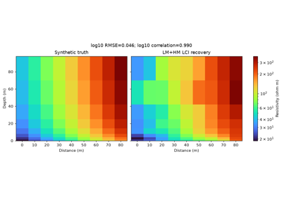
Ex. Synthetic LM+HM Line Inversion with Lateral Constraints
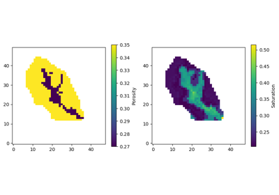
Ex. Loading and Processing Hydrological Model Outputs
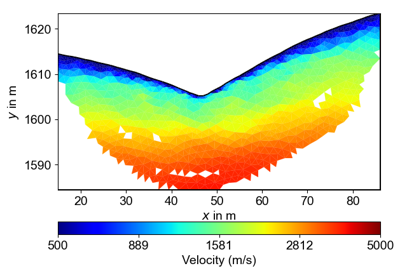
Ex. Structure-Constrained Resistivity Inversion
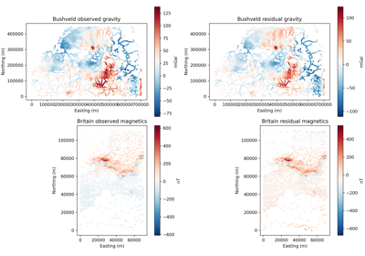
Ex. Gravity and Magnetics Processing and Inversion
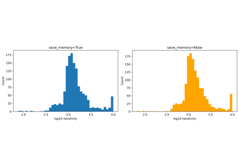
Ex. Memory-Optimized Time-Lapse ERT Inversion
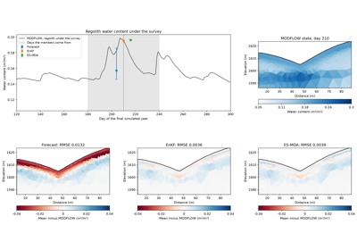
Ex. Assimilating an ERT Survey into a MODFLOW Water-Content Forecast
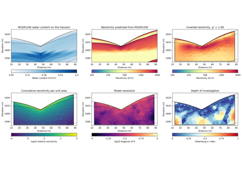
Ex. Where an ERT Survey Sees MODFLOW Water Content
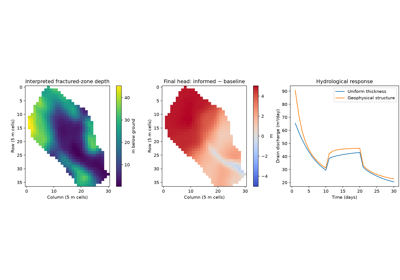
Ex. Geophysical structure → MODFLOW → hydrological response
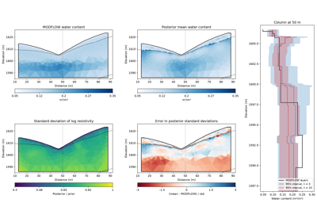
Ex. Posterior Uncertainty of Water Content Recovered from ERT
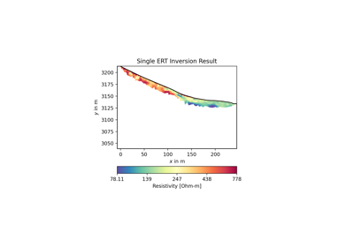
Ex. Single ERT File Inversion (No Time-Lapse)
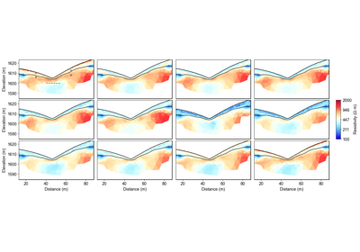
Ex. Structure-Constrained Time-Lapse Resistivity Inversion
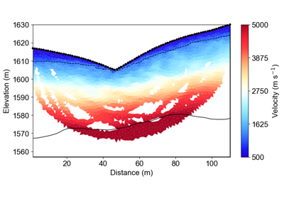
Ex. Seismic Refraction Tomography (SRT) Inversion and Interface Delineation
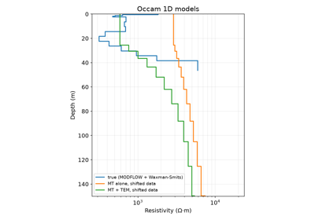
Ex. MT Workflow: From a Hydrological Model to Magnetotelluric Soundings and Back
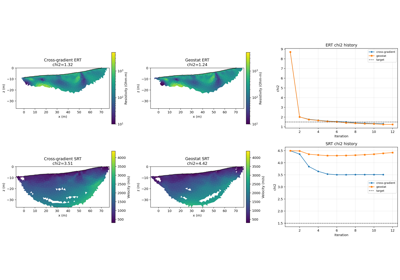
Ex. Joint ERT-SRT Inversion: Cross-Gradient and Geostatistical Coupling
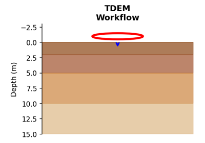
Ex. TDEM Workflow: From Hydrological Models to EM Responses and Inversion
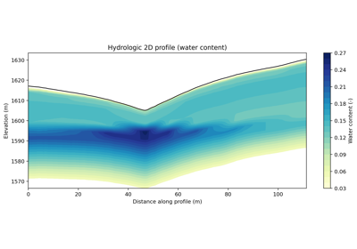
Ex. Hydrology to Multi-Geophysics Responses
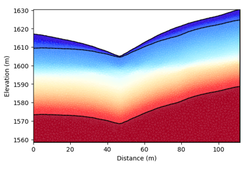
Ex. Seismic Refraction Tomography (SRT) Forward Modeling
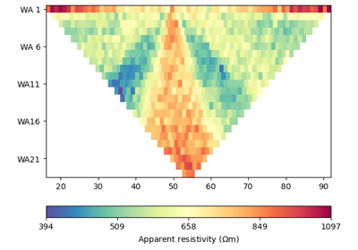
Ex. Creating Synthetic Time-Lapse ERT Measurements
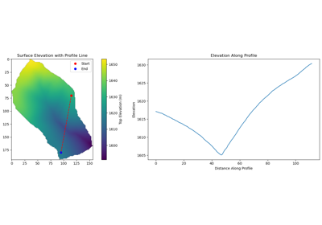
Ex. ERT Workflow: From Hydrological Models to ERT responses and Inversion
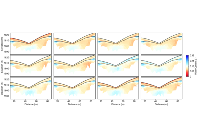
Ex. Monte Carlo Uncertainty Quantification for Hydrologic Properties Estimation
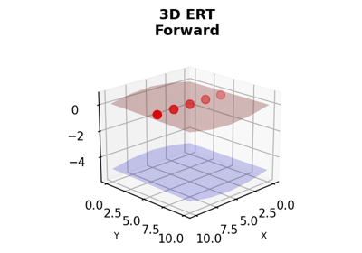
Ex. 3D ERT Forward Modeling with MODFLOW Integration